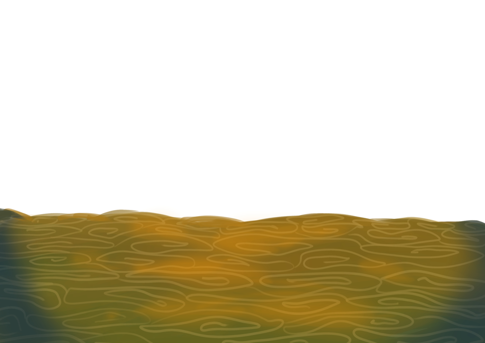
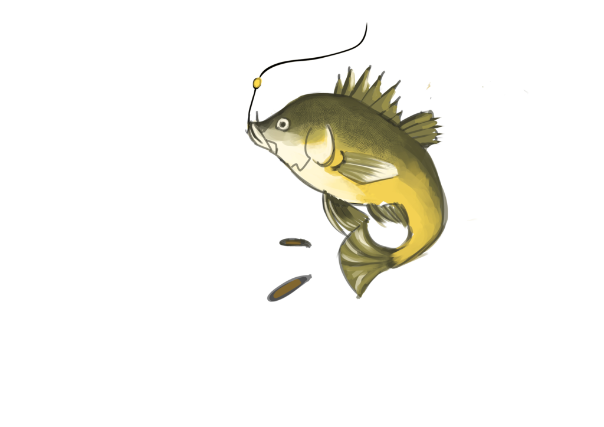

<section class="screen">
    
    
    
    <div class="speech-box-5">
        <p>Oh! Looks like I've landed one!</p>
    </div>
    <div class="btn-round green previous-slide" style="z-index: 11; position: fixed; bottom: 10px; left: 10px;">
        <span><</span>
    </div>
    <div class="btn-round green next-slide" style="z-index: 11; position: fixed; bottom: 10px; right: 10px;"><span>></span></div>
</section>